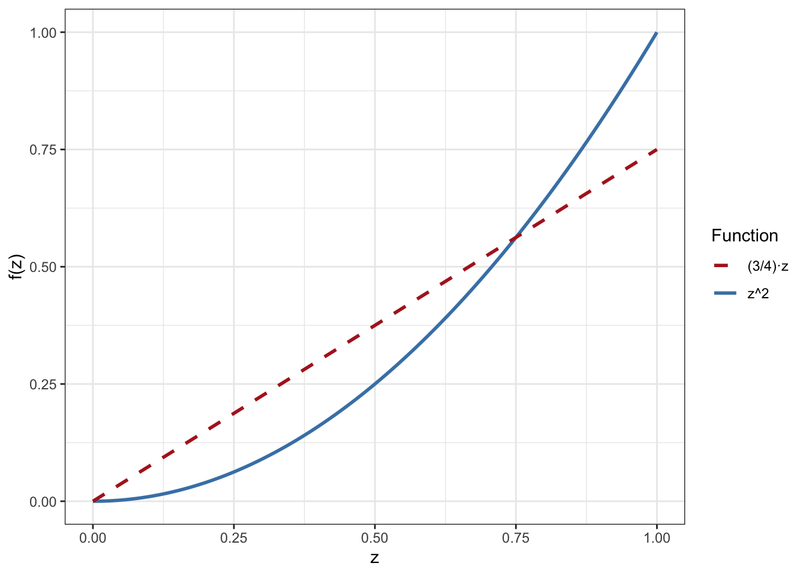
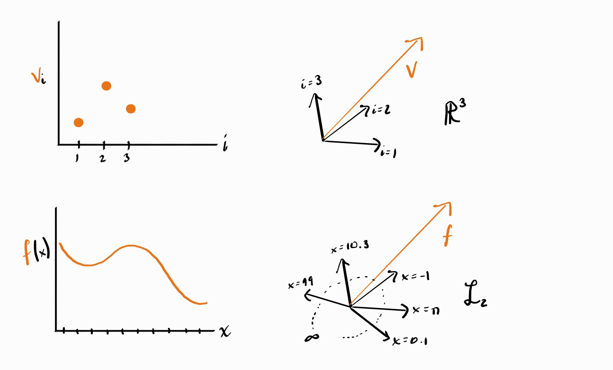
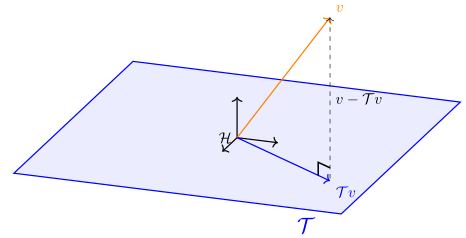
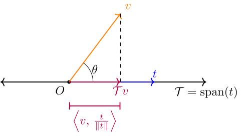
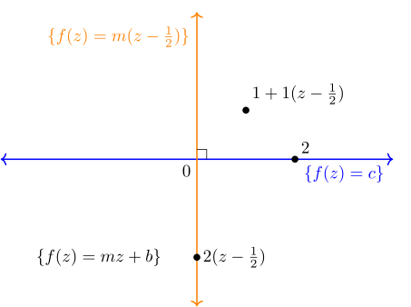
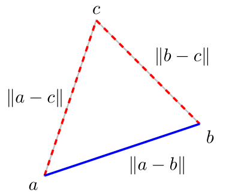
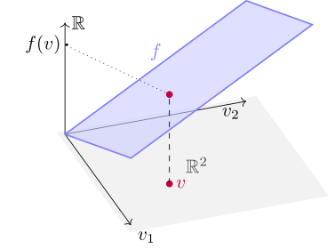
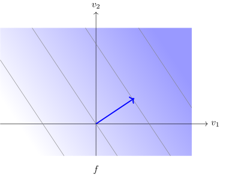
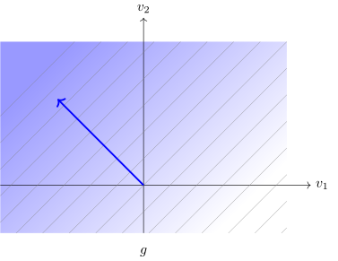

Appendix B — \(\mathcal L_2\) Space
It will help you a lot to learn efficiency theory if you have a solid understanding of \(\mathcal L_2\) and a few basic ideas from functional analysis. Many students of statistics are missing this background so I’ll try and give you the necessary intuition here.
B.1 Vector Spaces
The first thing to understand is that functions are a kind of vector. This might make no sense to you if you’re only familiar with the “vectors” you learned about in your first linear algebra class, which are finite-dimensional objects like \(x = [x_1, x_2, x_3]\). But the formal definition of “vector” is actually much broader than this.
Technically this is a special case of vector space called a real vector space (one built on the real scalar field) but for our purposes that will suffice.
Our usual (finite-dimensional) vectors are a special case of this. The vectors in the space \(\mathbb R^d\) are all the ordered tuples of \(d\) real numbers. If \(x = [x_1, \dots x_d]\) and \(y = [y_1, \dots y_d]\), we define scalar multiplication as \(cx = [cx_1 \dots cx_d]\) and \(x + y = [x_1 + y_1, \dots x_d + y_d]\). Clearly if I add two of these objects together or scale one of them using these definitions I get another vector in the same set, which means that we can call this set a vector space and its elements vectors. Technically we should also include the definitions of scaling and addition as part of the vector space since the set by itself doesn’t naturally come “equipped” with these definitions.
If you were to “code” a vector space, you might do it something like this:
class Vector:
def __init__(self::Vector):
... # define what kind of object the "vector" is
def __add__(self::Vector, other::Vector):
... # define how to add two vectors so you can evaluate v + u
def __mult__(self::Vector, c::Number):
... # define how to scale a vector by a number so you can evaluate c*v
VectorSpace = Set( # a set containing various Vectors (usually infinite)
Vector(...),
Vector(...),
...
)This has no practical value, I’m just trying to help you wrap your head around the ideas in case you are more familiar with programming than you are with abstract mathematics.
The definitions I gave for addition and scaling may seem so natural to you that you don’t even think about them but in fact they are just one specific way we could define these operations for finite dimensional ordered tuples. You can check that the given definitions satisfy the usual properties of “addition” and “multiplication” (e.g. \(a+(b+c) = (a+b +c)\)) so it is sensible to call them by those names.
You can make a vector space out of pretty much anything upon which you can define some kind of scaling and addition. For example, consider the space of all functions that map real numbers to real numbers. If you give me a function \(f\), let me define multiplication of a function by a scalar \(c\) to produce another function in the following way: \(cf\) is a new function that maps reals to reals where the output \((cf)(x)\) is given by \(c\cdot f(x)\). Similarly, define addition of two functions as \((f + g)(x) = f(x) + g(x)\), i.e. the function sum \(f+g\) is the unique function which when evaluated at any \(x\) gives the value \(f(x) +g(x)\). Again this might seem so natural as to not need explanation (or to be made confusing by explanation) but you should be aware that these are man-made definitions of “addition” and “scaling” for functions rather than numbers. Equipped with these operations, the set of all functions from reals to reals becomes a vector space and the functions within it are the vectors.
B.1.1 Functions as Vectors
In linear algebra or vector calculus you may have built some intuition about finite-dimensional vectors by imagining them as “arrows” from the origin to a particular point in 3D (or higher dimensional) space. This helps us reason about vectors geometrically using our physical sense of space. For example, you have probably seen the usual definition of the “length” of a vector (the norm) for \(d\)-dimensional vectors: \(\|x\| = \sqrt{\sum^d x_i^2}\)). You probably also know the inner product (dot product) \(x\cdot y = \sum^d x_i y_i\) (more generally written \(\langle x, y \rangle\)) and may recall that the inner product measures the angle between two vectors according to the law of cosines: \(\cos(\theta_{x,y}) = \frac{x \cdot y}{\|x\|\|y\|}\). If the inner product is zero, the two vectors are orthogonal. You may also recall that the norm is actually defined from the inner product, i.e. \(\|x\|^2 = x\cdot x\).
Seeing functions as vectors (“arrows”) helps us apply similar geometrical reasoning. We can talk about the “length” of a function or the “angle” between two functions. We just need to come up with definitions for those things that satisfy our expectations for how geometry should work. But before doing that I want to give you some more intuition to help you “see” functions as vectors outside of an abstract definition of a vector space.
I like to think of a function as a (continuously) infinite list of numbers like this: \[ f = [\dots f(-1), \dots f(0), \dots f(1.1), \dots f(\pi), \dots ]. \]
Each “element” of this function/vector is the value that the function takes at a particular argument \(x\). Instead of using function evaluation notation with the parentheses I could instead write it with the arguments as indices: \[ f = [\dots f_{-1}, \dots f_{0}, \dots f_{1.1}, \dots f_\pi, \dots ]. \]
This looks the same as a \(d\)-dimensional vector \(x = [x_1, \dots x_d]\) except that now the set of indices is e.g. all real numbers \(\mathbb R\) instead of the finite set \(\{1, \dots d\}\). To me, this perspective makes functions “feel” like very long, densely packed vectors. Since the coordinate axes of a standard \(d\)-dimensional vector space correspond to the vector indices \(\{1, 2, \dots d\}\), the “axes” of a vector space of functions might be thought of as corresponding to all the possible arguments \(x\) of the function(s). Different functions evaluate to different values along each of these (continuously infinite) different axes. Thinking this way shows that definitions of scaling and addition now work exactly the same “elementwise” way for finite-dimensional vectors and functions.
To complete the picture it’s also helpful to notice that finite-dimensional vectors can also be written as functions. Instead of writing e.g. \(x = [x_1, x_2, x_3]\) I could say that \(x\) is a function on the domain \(\{1,2,3\}\) such that \(x(1) = x_1\), \(x(2) = x_2\), and \(x(3) = x_3\). Indices and arguments are essentially two different ways to view or construct the same thing. The difference between a function (e.g. on the reals) and a finite-dimensional vector is just their domains if you want to see them both as functions (or their index sets if you want to see them both as “vectors”).

Hopefully at this point the visual intuition doesn’t seem so crazy to you, even when you’re working with infinite dimensional spaces. But if you’re having trouble, follow the advice of computer scientist Geoffrey Hinton: “to deal with a 14-dimensional space, visualize a 3-D space and say ‘fourteen’ to yourself very loudly. Everyone does it.”
It’s funny, but this kind of thinking is a staple of mathematics. We all use stupid pictures or imaginations grounded in our physical experience which we know are “wrong” in some way (e.g. 3 dimensions instead of 14). It’s the only way to build intuition! The important thing is knowing that the pictures are wrong in some ways. But the more wrong pictures you have (e.g. from different “perspectives”), the better, since you can switch to a picture that “correctly” illustrates the phenomenon of interest.
B.2 \(\mathcal L_2\) Space
Now that we’ve built that intuition we can start to formalize some of our geometric ideas. First up: what is the “length” of a function? If the usual length of a finite vector is determined by the (square root of the) sum of the squares of its elements, then we could extend that definition to a function. The only problem is that \(\sum_{x \in \mathbb R} f(x)^2\) is not well-defined: the finite sum is not appropriate to deal with an index set that is continuously infinite. But we do already have a “continuously infinite sum”: the integral. Thus we might define \[ \|f\|^2 = \int_{-\infty}^\infty f(x)^2 \mathop{}\!\mathrm{d}x \]
to be our norm. We call this the \(\mathcal L_2\) norm (there are other choices; the “2” is for the square inside the integral). Although there are other possible norms, the \(\mathcal L_2\) norm is nice because it is compatible with an inner product, namely \[ \langle f, g \rangle = \int_{-\infty}^{\infty} f(x) g(x) \mathop{}\!\mathrm{d}x . \] You should again think of this as the continuously-summed version of the finite-dimensional dot product. Hopefully the intuition from thinking of functions as long, dense “vectors” is helpful to you here. If you replace the integral with a sum and the function call notation with an index you will see how this norm and inner product are analogous to the finite-dimensional versions you’re more familiar with.
There are some functions which have infinite or undefined \(\mathcal L_2\) norm. For example, \(f(x) = x^2\) would have infinite norm since (for now) we’re integrating over the entire number line and the area under the curve of \((x^2)^2\) goes off to infinity. To preserve the geometric intuition of our vector space, we cannot include these functions (the same way there is no finite-dimensional vector that has infinite norm). The vector space \(\mathcal L_2\) (read: “el-two”) is therefore defined as the set of all functions with finite \(\mathcal L_2\) norm (not quite but see below). Sometimes this is also called the space of “square-integrable” functions. You can check that this is indeed a vector space, i.e. that two functions with finite square integrals sum to a function with a finite square integral and that a function with a finite square integral scales to another function with finite square integral.
Example B.1 Consider the functions \(f = 1_{[0,1]}\) and \(g = 1_{[2,3]}\). According to our inner product, these two functions are orthogonal (compute the integral and see). If this is not obvious to you at first, consider the finite-dimensional vectors \([0,1]\) and \([1,0]\): hopefully these are “obviously” orthogonal to you: you can visualize them as unit vectors along the two axes of \(\mathbb R^2\). Our two functions are no different: \(f\) is nonzero along the “axes” corresponding to the indices in \([0,1]\) while \(g\) is nonzero only along “axes” \([2,3]\). If you imagine them as long dense “vectors” you’ll see that \(f\) and \(g\) have ones in different places, the same way that \([0,1]\) and \([1,0]\) do.
A further wrinkle is that until now I’ve used the standard Riemman integral (with the differential \(\text{d}x\)) to define \(\mathcal L_2\) but that is not quite right. In reality it’s slightly more complicated. We formally define \(\mathcal L_2(\mathbb P)\) to be the space of \(\mathbb P\)-measureable, square-Lebesgue-integrable functions. The measurability is a technical condition that rules out some extremely esoteric corner cases that you don’t need to worry about: read up on measure theory if you want to learn more. Although the \(\mathcal L\) in \(\mathcal L_2\) stands for “Lebesgue”, the “Lebesgue” part is also not terribly important. The Lebesgue integral is a formalization of the integral that can integrate strictly more functions than the Riemann integral, but any function that is Riemann integrable Lebesgue-integrates to the same value so it doesn’t make much difference in terms of intuition.
The important part is the \(\mathbb P\): one of the strengths of the Lebesgue integral is that it can be defined with respect to any “measure” (probability distributions are formally mathematical objects called measures). When you integrate “with respect to a distribution \(\mathbb P\)” you write \(\int f \mathop{}\!\mathrm{d}\mathbb P\) or \(\int f(z) \mathop{}\!\mathrm{d}\mathbb P(z)\) to indicate more explicitly that \(\mathbb P\) is a distribution over \(Z\) and that \(f\) takes arguments in the range of \(Z\). If you’re not familiar with measure theory (I don’t expect you to be), when you see an integral with respect to a continuous distribution \(\mathbb P(Z)\) with density function \(p(z)\) you should read it as \[ \int f(z) \mathop{}\!\mathrm{d}\mathbb P(z) = \int f(z) \ p(z) \text{d}z = \mathbb E_{\mathbb{P}}[f(Z)] \]
In other words, you can think of the differential \(\text{d}\mathbb P\) as weighting different parts of the domain of \(z\) in the integral by the probability of \(z\) falling into them. Integrating a function with respect to a distribution over \(Z\) is the same as taking its expectation over the distribution of \(Z\).
However, \(\mathcal L_2(\mathbb P)\) spaces can also be defined when \(\mathbb P(Z)\) is a discrete distribution (with probability mass function \(p(z)\)). In that case, \(\int f(z) \mathop{}\!\mathrm{d}\mathbb P(z) = \sum f(z) \ p(z) = \mathbb E_{\mathbb{P}}[f(Z)]\). The integral is also defined for distributions that are neither strictly continuous or discrete (e.g. \(Z\) is 0 half the time and a standard normal the other half; think of a normal density with an infinite “spike” of mass 1/2 at 0). You don’t have to worry about this to get all the intuition you need for this book.
You’ll notice that some functions will be square-integrable under some distributions but not under others. There isn’t really one single \(\mathcal L_2\) space when we’re working with probability distributions. In the wild, if you see “\(\mathcal L_2\)”, that’s short for the \(\mathcal L_2\) space based on the Lebesgue measure: roughly speaking, the integrals used to define the norm and inner product don’t use any weights on the real number line. Nonetheless I may sometimes refer to “\(\mathcal L_2\)” as a shorthand for \(\mathcal L_2(\mathbb P)\) for a specific distribution that is clear from context or for any generic distribution. Similarly, if we write a norm or inner product we should technically always specify the relevant space, i.e. \(\| f \|_{\mathcal L_2(\mathbb P)}\) or \(\langle f,g \rangle_{\mathcal L_2(\mathbb P)}\). However, to minimize notational burden we often leave off the details of the space and/or base measure when they are clear from context.
Example B.2 \(f(z) = z^{-1/2}\) is square-integrable if \(Z \sim \text{Unif}[2,3]\) but not if \(Z \sim \text{Unif}[0,1]\).
The very last detail we need to attend to is that two different (pointwise) functions need to be considered “equivalent” in \(\mathcal L_2\). This is a very minor detail that you can quickly forget about for most purposes but I’ll go over it here for completeness.
In finite-dimensional vector spaces, if you have two vectors \(v\) and \(u\) and \(\|v-u\|=0\), then \(v=u\). We’d like this to work in \(\mathcal L_2\) but it doesn’t without a little extra massaging.
The problem highlighted by Exercise B.2 is that the \(\mathcal L_2\) distance “ignores” pointwise differences (in fact any countable number of them). Therefore in order to get our vector space to work the same way as \(\mathbb R^d\) we need to say that \(f\) and \(g\) are effectively the same function as far as \(\mathcal L_2(\mathbb P)\) is concerned. Formally, we say that the elements (vectors) of \(\mathcal L_2(\mathbb P)\) are not functions themselves, but mutually exclusive groups of functions that are equivalent to each other for purposes of computing norms or inner products. We call these groups equivalence classes. Again, this is not really that critical to understand and doesn’t have many implications as far as this book is concerned. Practically speaking, everyone considers functions to be the vector elements of \(\mathcal L_2\) spaces, not equivalence classes of functions.
Now we can finally state our “official” definition of \(\mathcal L_2(\mathbb P)\):
The (squared) \(\mathcal L_2(\mathbb P)\) norm has an important probabilistic interpretation: it represents the (uncentered) second moment of \(f(Z)\): \[ \|f\|^2 = \mathbb E[f(Z)^2]. \]
For functions that have zero mean (\(\mathbb E[f(Z)]=0\)), this is the variance \(\|f\|^2 = \mathbb V[f(Z)]\). Therefore the “length” of a (zero mean) random variable is nothing other than its standard deviation.
\(\mathcal L_2\) is the canonical example of a Hilbert space, which is just an inner product space that contains its limits. So if you see that term anywhere and aren’t familiar with it, just think of \(\mathcal L_2\) or \(\mathbb R^d\). We won’t look at Hilbert spaces besides these in this book but nonetheless I’ll use the term “Hilbert space” just so I don’t have to write out “\(\mathcal L_2\) or \(\mathbb R^d\)” every time.
These topics are part of the foundations of measure theory and functional analysis. If you’re curious about function spaces and integrals you should check out a book or take a course on one of these subfields (after some introductory real analysis). My recommendations for self-study are in the introduction to this book.
B.3 Triangles in Inner Product Spaces
In this section we’ll investigate some properties of Hilbert spaces that come from simple geometric arguments about triangles. These properties are generic to all Hilbert spaces so when I say “vector” in the following I mean it in the general sense that could indicate a function, not just a finite-dimensional vector. To prove these properties I’ll use the general definition of an inner product.
You can check that the usual dot product and the \(\mathcal L_2(\mathbb P)\) inner product we defined above satisfy these conditions. In what follows below I’ll also use the fact that the norm is induced by the inner product: \(\|v\|^2 = \langle v, v \rangle\). As a consequence of this and the definition above we have the simple corollaries \(\|cv\| = c\|v\|\) and \(\|v\| = 0 \implies v=0\).
B.3.1 Pythagorean Theorem
You may recall the Pythagorean theorem from geometry. For a right triangle with two right-angle adjacent sides of length \(a\) and \(b\), the length of the hypotenuse \(c\) is given by \[c^2 = a^2 + b^2\]
We say two vectors are orthogonal (which we write \(u \perp v\)) if their inner product is zero: \(\langle u,v\rangle = 0\). This is another way to formalize the notion of there being a right angle between vectors. Recall that you can think of \(v-u\) as (the translation to the origin of) the “arrow” going from the point \(u\) to the point \(v\). Therefore when \(u \perp v\), you can think of \(v\) and \(u\) are the “sides” of a right triangle whose hypotenuse is \(v-u\). In that case, the Pythagorean theorem tell us that \(\|v-u\|^2 = \|v\|^2 + \|u\|^2\). In \(\mathcal L_2\) and general Hilbert spaces things work the same way.
B.3.2 Projection
The Pythagorean theorem often comes up in the context of projection. Recall that in finite-dimensional vector spaces a subspace is a smaller vector space that is contained in the original vector space. For example, in 3-dimensional space, the \(x\)-\(y\) plane is a 2-dimensional subspace because any linear combination of vectors in that plane remain in the plane: thus it is a vector space in its own right. Subspaces are often constructed as a span (linear combination) of some set of vectors, e.g. the span of \(\{[-2,0,0], [0,5,0]\}\) gives the \(x\)-\(y\) plane in 3D space. In infinite dimensions subspaces are defined in exactly the same way.
Although they sound similar, you should not confuse a subspace with a subset. Any set of vectors can be a subset of the original vector space. A subspace, however, has to still itself be a vector space in its own right.
Example B.3 Consider the subset of \(\mathcal L_2(P)\) comprised of all functions that have zero mean under \(\mathbb P\), i.e. functions \(f\) where \(\mathbb E[f(Z)] = 0\). This subset \(\mathcal V\) is actually a subspace because it is a vector space. To verify that we just need to check that \(\mathcal V\) is a vector space: if we add and scale elements with it, the results are still in \(\mathcal V\).
To that end, let \(f\) and \(g\) be any functions in \(\mathcal V\) and let \(c\) be a scalar constant. Since \[ \mathbb E[cf(Z) + g(Z)] = c\mathbb E[f(Z)] + \mathbb E[g(Z)] = 0, \]
\(cf + g\) satisfies the condition required for membership in \(\mathcal V\), proving it is a vector space.
Now that we have our definition of subspaces we can define orthogonal projection in the context of inner product spaces.

In terms of intuition, you can think of projection as “dropping down” the vector \(v\) onto the “plane” \(\mathcal T\). The idea is that the projection \(\mathcal T v\) is the “best approximation” of \(v\) that we can manage in \(\mathcal T\).
In the case that \(\mathcal T\) is a one-dimensional subspace of the larger vector space \(\mathcal V\) we have a handy formula for computing the projection.
This formula gives us a nice geometric interpretation to the inner product if you consider a unit vector \(\tilde t\). In this case, the projection formula simplifies to \(\mathcal T v = \langle v,\tilde t\rangle \tilde t\). The inner product of \(v\) with the unit vector \(\tilde t\) is therefore the length of the projection of \(f\) onto the span of \(\tilde t\). The inner product with vectors \(t\) of different norm will give the same number, just scaled by that norm. Formally, if we let \(\mathcal T\) be the span of \(t\),
\[ \langle v,t \rangle = \|\mathcal T v\| \|t\|. \]

From this picture you can see that the angle between any \(t \in \mathcal T\) (not necessarily norm 1) and \(v\) can be extracted by taking the inverse cosine of the lengths of the “adjacent” over the “hypotenuse” (the classical definition of cosine). Those lengths are \(\langle v, t/\|t\| \rangle\) and \(\|v\|\). Dividing and pulling out the norm gives the law of cosines \(\cos(\theta) = \frac{\langle v, t \rangle}{\|v\| \|t\|}\).
Example B.4 Let’s presume that \(\mathbb P(Z)\) is the uniform distribution over \([0,1]\) and let \(\mathcal T\) be the subspace of \(\mathcal L_2(\mathbb P)\) comprising of of all linear functions with no intercept, i.e. functions that can be written as \(f(z) = cz\) for some slope \(c\). You can verify that this is a subspace.
Let’s let \(v(z) = z^2\) and figure out what the projection of this function is onto \(\mathcal T\). In other words, what is the linear function that best approximates \(z^2\) in a mean-squared sense over the domain \([0,1]\)? To do this we’ll use our formula: \(\mathcal T v = \frac{\langle t,v \rangle}{\|t\|^2}t\)
Pick \(t(z) = z\) as the representative from \(\mathcal T\). Then \(\langle t,v \rangle = \int_0^1 z z^2 dz = 1/4\) and \(\|t\|^2 = \int_0^1 z^2 dz = 1/3\). Thus \(\mathcal T v = \frac{3}{4}x\). Visually your eye might agree that this is the best (no-intercept) linear approximation:
We call what’s left over when you subtract the projection from the original vector the residual. An important geometric property of projections that you may recall from linear algebra (and which I have already been showing in the figures) is that residuals are always orthogonal to the entire subspace that gets projected on (see Figure B.1).
A special case of this is when \(t = \mathcal T v\), which by definition is a vector in \(\mathcal T\). The residual and the projection form two sides of a right triangle with the original vector as the hypotenuse. Therefore we often encounter the Pythagorean theorem in the context of projection:
\[ \|v\|^2 = \|\mathcal Tv\|^2 + \|v - \mathcal Tv\|^2 . \]
At this point you should recognize we’re abusing notation by using \(\mathcal T\) as both a subspace and as a projection operator (function) that takes a given vector \(v\) and returns another vector which is the projection onto \(\mathcal T\). Besides convenience, one reason to write it like this is that \(\mathcal T v\) evokes the matrix-vector multiplication notation \(A x\). In fact, orthogonal projection is synonymous with a special kind of matrix multiplication in \(\mathbb R^d\). More generally, you should bring that intuition with you: projection is a special kind of linear mapping.
The proof of Theorem B.4 is based on the common theme that many interesting vector spaces can be built up as a kind of “sum” of subspaces.
When I think of orthogonal sums, I usually think of 3D space being the “sum” of the \(x\)-\(y\) plane and the \(z\)-axis. The \(x\)-\(y\) plane is itself the sum of the \(x\)- and \(y\)-axes. Aleternatively you could formulate 3D space as the sum of the \(z\)-\(y\) plane and the \(x\)-axis. This shows that there are many ways to “break up” a space into orthogonal subspaces. The “named” axes don’t matter either, I could also break up 2D space into the sum \(\mathbb R^2 = \{c[1,1]: c \in \mathbb R\} \oplus \{c[1,-1]: c \in \mathbb R\}\).
In the proof of the linearity of orthogonal projection, we used the fact that by the orthogonality of projection, \(\mathcal V = \mathcal T \oplus \mathcal T^\top\). We broke the original vectors and their sum into their projections and residuals and then noted that by orthogonality the only way to make the sums match up was to match up the parts corresponding to each orthogonal complement.
This also gives a general method to decompose a vector space into an orthogonal sum. First pick an arbitrary nonzero vector \(t\). Then project every other vector onto its span \(\mathcal T\) and take all the residuals. The set of projections and set of residuals are then orthogonal subspaces that sum to the full vector space.
Example B.5 Let \(\mathbb P\) be the standard uniform distribution and let \(\mathcal V = \{f: f(z) = mz+b\}\) be the subspace of linear functions in \(\mathcal L_2(\mathbb P)\). Let’s find a way to decompose this subspace into an orthogonal sum.
Pick \(f(z) = 1\). The span of \(f\) is clearly \(\mathcal T = \{z \mapsto c: c \in \mathbb R\}\). Using our 1D projection formula and taking the representative \(f(z) =1\) (which has norm 1), the residual of any function \(g(z) = mz+b\) projected onto \(\mathcal T\) is given by \[ \begin{aligned} (mz-b) - \mathcal T (mz-b) &= (mz-b) - \int_0^1 mz+b \mathop{}\!\mathrm{d}z \\ &= m(z - 1/2) \end{aligned} \]
Therefore \[ \{z\mapsto mz+b: m,b \in \mathbb R\} = \{z \mapsto c:c \in \mathbb R\} \oplus \{z \mapsto m(z-1/2):m \in \mathbb R\} \]

B.3.3 Cauchy-Schwarz
One important consequence of the general Pythagorean theorem is that we can easily bound inner products with a product of norms
One way to remember the Cauchy-Schwarz inequality is that it makes it sensible to define an “angle” as \(\cos(\theta) = \frac{\langle f,g \rangle}{\|f\| \|g\|}\) since the right-hand side is guaranteed to be between 1 and -1. The probabilistic version of this in \(\mathcal L_2 (\mathbb P)\) is that for two zero-mean functions \(\mathbb E[f(Z)] = \mathbb E[g(Z)] = 0\),
\[ \frac{\langle f,g \rangle}{\|f\| \|g\|} = \frac{\mathbb C[f(Z), g(Z)]}{\sqrt{\mathbb V[f] \mathbb V[g]}}, \]
which is the correlation between the random variables \(f(Z)\) and \(g(Z)\). This must also be between -1 and 1. This also gives a geometric interpretation to the correlation coefficient: it’s a measure of the “angle” between two random variables viewed as vectors in \(\mathcal L_2(\mathbb P)\).
Example B.6 (Bounding an Integral) Suppose I know \(f \in \mathcal L_2(\mathbb P)\). In many problems we might end up with an expression like \(\mathbb E[f(Z)]\) which we might not know how to compute without knowing exactly what \(f\) is. However, Cauchy-Schwarz gives us one useful way to approximate such a term in the sense that we can at least say it’s no bigger than a certain number. To wit,
\[ |\mathbb E[f(Z)]| = \left|\int f(Z) \cdot 1 \mathop{}\!\mathrm{d}\mathbb P\right| = |\langle f, 1 \rangle| \le \|f\|. \]
We even know that the bound is sharp (we can’t do any better without knowing more). That’s because if \(f = c\) (a constant), then \(\mathbb E[c] = \|c\|\).
Example B.7 (Continuity of Inner Product) Recall Definition A.5. Our plan is to show that the inner product is continuous in either argument. To do so, the definition of continuity says that we need to show that \(\langle v_n, u \rangle \to \langle v, u \rangle\) for any sequence \(v_n \overset{\mathcal V} v\) where we use the \(\mathcal V\)-norm to define the required distance metric \(d_{\mathcal V}(v,u) = \|v-u\|_{\mathcal V}\). The inner products converge if \(|\langle v_n, u \rangle - \langle v, u \rangle| = |\langle v_n - v, u \rangle| \to 0\) for all sequences such that \(\|v_n - v\| \to 0\). By Cauchy-Schwarz, \[ |\langle v_n - v, u \rangle| \le \|v_n - v\| \|u\|. \] Since the right-hand side converges to zero for any convergent sequence \(v_n\), the left hand side does too and thus the inner product is continuous in the first argument. Symmetry of the inner product means this is also true of the second argument.
B.3.4 Triangle Inequality
Lastly, we have the aptly-named triangle-inequality, which essentially says that the fastest way from point A to point B is a straight line. If you take a detour to point C, the total distance that you travel is larger than if you had gone directly to B.

All norms that are induced by inner products satisfy the triangle inequality by design, as we have proven. However, the triangle inequality is actually part of the definition of a norm: any function that someone wants to call a norm must satisfy the triangle inequality in order for them to call it that.
Sometimes we are interested in proving that one side of a triangle is small, but what we know about are the other two sides. That’s when the triangle inequality comes in handy.
Example B.8 If I have a sequence of real numbers \(x_n \to x\) and another \(y_n \to y\), is it true that \(x_n y_n \to xy\)?
Let’s consider the difference \(|x_n y_n - xy|\). To prove the claim we have to show that this is eventually always smaller than any given \(\epsilon\). We can do this by taking a “detour” to the point(s) \(x_n y\): \[ |x_n y_n - xy| \le |x_n y_n - x_n y| + |x_n y - xy|. \] Perhaps it goes without saying, but the absolute value is a norm on \(\mathbb R\) induced by the inner product \(\langle x,y \rangle = xy\) so we are justified in applying the triangle inequality. Our purpose in taking this detour is that we’re trying to somehow reduce the distance \(|x_n y_n - xy|\) into some combination of \(|x_n- x|\) and \(|y_n - y|\) because we know we can make those distances as small as we like by taking \(n\) large enough (that’s the definition of convergence).
For each of the terms above, we can now use Cauchy-Schwarz, e.g. \(|x_n y_n - x_n y| = |x_n (y_n - y) | \le |x_n||y_n - y|\), therefore
\[ |x_n y_n - xy| \le |x_n| |y_n - y| + |y| |x_n - x|. \]
We’re almost there but we have the term \(|x_n|\) which is neither a constant like \(|y|\) nor converging to zero. Here again we can use the triangle inequality on \(|x_n|\) and take a detour to \(x\) to expand \(|x_n| = |x_n -0| = |x_n -x| + |x|\), leaving us with
\[ |x_n y_n - xy| \le |x||y_n - y| + |x_n-x | |y_n - y| + |y| |x_n - x|. \]
Now everything is in terms of constants and the two distances which we know go to zero. Therefore we have the desired convergence.
When you first see proofs like the one in the example above it can feel overwhelming: how did I know where to use the triangle inequality? How did I know when to use Cauchy-Schwarz? It all seems like black magic and cheap tricks that you can understand in retrospect, but could never have constructed yourself. But there actually are certain “tells” that you can use to build your intuition.
For example, when you see a norm of a sequence, you should immediately want to approximate it by the norm of the limit \(|x_n| \approx |x|\) for convenience since the latter is just a constant that you can deal with easily. The triangle inequality then comes to mind as a way to do this since we can “detour” \(x_n\) to \(x\) and then get the approximation \(|x_n| \le |x_n -x| + |x|\). Cauchy-Schwarz should come to mind any time you see pretty much any inner product. \(|yx_n - yx|\) is a mess but \(|y||x_n -x|\) is something we can understand. With continued practice you will get very good at just “seeing” what to do. If you’re interested in that I recommend picking up a real analysis textbook and working through the problems.
B.4 Riesz Representation
In this section we’ll talk about Riesz representation. The basic idea here is that any linear function whose inputs are elements of a vector space can be entirely characterized by its direction of steepest ascent and by its slope in that direction. We’ll first walk through the ideas in finite-dimensional inner product spaces where things are easier to visualize and we don’t need any definitions from real analysis before proceeding to the general situation in possibly infinite-dimensional Hilbert spaces.
B.4.1 Warm-Up in \(\mathbb R^d\)
You may recall from linear algebra or vector calculus that many useful functions map vectors to other vectors or vectors to numbers. In \(\mathbb R^d\), given a \(p \times d\) matrix \(A\), the matrix-vector “multiplication” \(Av\) can actually be seen as a function that maps \(v \in \mathbb R^d\) to \(Av \in \mathbb R^p\). Similarly, the vector dot product \(v \mapsto a\cdot v\) for some vectors \(a,v \in \mathbb R^d\) maps \(v \in \mathbb R^d\) to \(a\cdot v \in \mathbb R\). Both of these example functions on vectors are linear in the sense that \(f(cv + u) = cf(v) + f(u)\) for a scalar \(c\) and vectors \(v,u\).
It’s clear that the dot product between an argument \(v\) and some fixed vector \(a\) is linear in the argument \(v\), but actually the relationship goes both ways: all linear functions can be written as an inner (dot) product between the argument and some other fixed vector in the vector space. Formally, for any function \(f\) which is linear and maps \(\mathbb R^d\) to \(\mathbb R\), there is some fixed \(t_f \in \mathbb R^d\) that “represents” the function in the sense that for all \(f(v) = \langle t_f, v \rangle\) for all \(v \in \mathbb R^d\). We call the vector \(t_f\) the “Riesz representer” of the function \(f\).
Mechanically this is pretty easy to show. To start, we can always write \(v\) as a sum of its components along the orthonormal basis vectors \(e_j\) that span our vector space: \(v = \sum_j v_j e_j\). Now we apply the function \(f\) to both sides and use the linearity: \[ f(v) = f\left(\sum_j v_j e_j\right) = \sum_j v_j f(e_j) = \langle v, t_f \rangle \]
where we’ve defined the vector \(t_f = [f(e_1), f(e_2), \dots f(e_d)]\). Since \(f\) maps vectors to numbers, each element \(f(e_j)\) is indeed a scalar value. It’s important to recognize that \(t_f\) is a fixed vector associated with the fixed function \(f\): it doesn’t depend on the argument \(v\).
While the proof is simple, it doesn’t give much intuition for what the result means or give any sense of why it’s true. To do that it’s helpful to look at some pictures. In the figure below I’ve drawn the graph of some linear function of vectors in \(\mathbb R^2\): it looks like a plane that passes through the origin. For each vector \(v = [v_1, v_2]\) on the \(\mathbb R^2\) plane, you can find the scalar value of \(f(v)\) by drawing a vertical up to the graph that represents \(f\).

It should be somewhat intuitive to you that a linear function has a linear (planar) graph but nonetheless let’s think about why that is. The graph must pass through the origin because by linearity \(f(0) = 0 \times f(v) = 0\). Now, for any fixed vector \(v\), the graph of \(\epsilon\) vs \(f(\epsilon v) = \epsilon f(v)\) is a straight line between with intercept \(0\) and slope \(f(v)\). Thus the graph of \(f\) is linear in all directions and therefore planar.
Let’s look at this graph from the top down. I’ve drawn this in the figure and you can see that the level sets of \(f\) (the “elevation lines” on a map) are straight lines that all go in the same direction. The direction orthogonal to these level sets is the direction in which \(f\) is increasing the fastest. If you stood on the surface, that would be the “uphill” direction. I’ve also drawn a similar picture for another linear function that I call \(g\). For \(g\) you can see that the uphill direction is different and that the level sets are closer together, meaning that the climb is “steeper” in the uphill direction than it is for \(f\).


Looking at the two examples, you may realize that the uphill direction and the steepness in that direction are everything you need to know in order to characterize any linear function \(f\). The uphill direction can be represented by a unit vector and the steepness is a factor that it is scaled by. We call that scaled unit vector \(t_f\), our vector representer of \(f\). This vector contains all the information there is to know about \(f\), and vice versa. Technically they are not the same object, but we can always reconstruct one from the other.
It remains to be shown that this vector is the same representer \(t_f\) that we derived above. To find the “most uphill” direction, we see how much we climb if we take a step \(v\) of unit length \(\|v\| = 1\) in any direction away from some starting point. It doesn’t matter from where we start so for convenience we’ll start from zero. Formally, the “most uphill” direction is therefore
\[ \begin{aligned} v^* &= \underset{v \in \mathbb R^d : \|v\|=1}{\text{argmax}} \ f(v) \\ &= \underset{v \in \mathbb R^d : \|v\|=1}{\text{argmax}} \ \sum v_i f(e_i) \quad \text{(linearity)} \end{aligned} \]
i.e. we want to maximize the inner product \(\langle v, t_f \rangle\) over all \(v\) with norm 1. By Cauchy-Schwarz, this is attained by letting \(v = t_f / \|t_f\|\). If we look at the amount by which \(f\) climbs over one unit step in this direction, it is \(f(t_f/\|t_f\|) = \langle t_f, t_f \rangle / \|t_f\| = \|t_f\|\). Therefore the representer \(t_f\) is nothing more than the direction in which \(f\) is increasing the most, with its norm indicating how quickly \(f\) increases in that direction.
I’ve explained intuitively why this representer vector uniquely identifies any linear function, but I haven’t explained why taking the inner product of the argument with the representer is equivalent to evaluating the function. To understand that again I think it helps to look at the pictures above that show the level sets of the function. If you imagine walking along one of those level sets (orthogonal to the representer), the value of the function does not change. In other words, the function \(f\) is completely insensitive to any motion at any point that goes in a direction that is orthogonal to the direction of steepest increase. Let’s decompose \(\mathcal V\) orthogonally into \(\mathcal T = \text{span}(t_f)\) and \(\mathcal T^\perp\). What I’ve said is formally that \(f(v + t^\perp) = f(v)\) for any motion \(t^\perp\) in \(\mathcal T^\perp\).
Now imagine moving in an arbitrary direction \(u\). Whatever direction you go, you can decompose it into a part that is in the direction of steepest ascent and the part that is in the orthogonal complement of that subspace, i.e. write \(u = t + t^\perp\). By the linearity of \(f\), \(f(u) = f(t) + f(t^\perp) = f(t)\). In other words, \(f\) doesn’t even care about any component of motion that isn’t in the direction of steepest ascent. Finally, let’s think about what the vector \(t\) is: it’s the part of \(u\) that lies in \(\mathcal T\), i.e. the projection \(\mathcal T u = \left\langle u, \frac{t_f}{\|t_f\|} \right\rangle \frac{t_f}{\|t_f\|}\). The inner product is just a constant so when we evaluate \(f(u) = f(\mathcal T u)\) it gets passed right through and we’re left with
\[ f(u) = f(\mathcal T u) = \left\langle u, \frac{t_f}{\|t_f\|} \right\rangle f\left(\frac{t_f}{\|t_f\|}\right) = \left\langle u, \frac{t_f}{\|t_f\|} \right\rangle \|t_f\| \]
where the last equality obtains because the increase in \(f\) under one unit step in the direction of maximal increase is \(\|t_f\|\), as we just showed. Therefore \(f(u) = \langle u, t_f \rangle\) as desired.
The overall lesson is that linear functions completely ignore motion in any direction that isn’t the direction of steepest increase. Because of this, the only part of the input that matters is the part in the direction of steepest increase, which is given by projecting the input onto that direction. Since the projection is related to the inner product, we can replace function evaluation with taking that inner product as long as we choose a representative in the subspace of maximum increase that has a norm equivalent to the increase in \(f\) when moving one unit in that direction.
To be clear, none of this reasoning proves the fact that every linear function on \(\mathbb R^d\) has a Riesz representer any better than the 2-line argument I gave at the beginning of this section. But I hope that walking through this has helped you “feel it” in your bones rather than “know it” as an abstract fact.
B.4.2 Infinite-Dimensional Riesz Representation
Now we’ll talk about the more general case when the Hilbert space of interest could be infinite-dimensional. For the most part we’ll be interested in \(\mathcal L_2\) or subspaces thereof. If we talk about functions defined on \(\mathcal L_2\), we’re talking about functions of functions. In functional analysis, people sometimes call these operators, but there’s really nothing special about them: they are still functions. When an operator has real-valued output (i.e. maps functions to numbers), it’s often called a functional.
Example B.9 (Expectation Functional) The function \(f \mapsto \mathbb E_{\mathbb P}[f(Z)]\) is a functional (a linear functional, in fact). The expectation functional is defined on all of \(\mathcal L_2(\mathbb P)\) since every square-integrable function is integrable (see Example B.6).
In general Hilbert spaces the story of Riesz representation is essentially the same except there is one little wrinkle: not all linear functions actually have a direction of steepest ascent. The problem is that there are too many “directions” to go in within infinite-dimensional space. No matter what direction you “look” (e.g. imagine standing at the origin), there may be some other direction you could look in where the slope (the unit rise in the function over a unit change in the input) is steeper! In contrast, in 3D (or \(d\)-dimensional) space, the fact that there are only 3 (\(d\)) dimensions means that there is always some direction of steepest ascent: you quickly run out of directions to look for steeper slopes.
Example B.10 (Evaluation at a Point) Let \(Z \sim \text{Unif}(-1,1)\) and let \(T: f \mapsto f(0)\) be the functional that takes \(f \in \mathcal L_2(\mathbb P)\), evaluates it at the point \(z=0\), and returns the result. Clearly \(T\) is linear under the definition of function addition and scaling in \(\mathcal L_2\) because \[ T(cf+g) = (cf + g)(0) = cf(0) + g(0) = cTf + Tg. \] Interestingly, however, \(T\) does not have a “direction of steepest ascent”. To understand this, let’s first define the slope of \(T\) as the rise in \(T\) over a unit change in the input \(f\). Equivalently, we may consider the rise in \(T\) divided by the amount of change in the input: \[ \frac{T(f) - T(f+h)}{\|h\|}. \] Since \(T\) is linear, the slope in a given direction is the same at all points so we can take \(f=0\) to simplify things without loss of generality. Now let’s pick some directions \(h\) (these are functions; recall functions are the vectors in \(\mathcal L_2\)) and see what the magnitude of the slope \(\frac{|Th|}{\|h\|}\) is. Consider the functions (directions, vectors)
\[ h_n(z) = 2\sqrt{n} 1\left(-\frac{1}{n} \le z \le \frac{1}{n}\right). \]
These functions have norms \[ \|h_n\|^2 = \frac{1}{2}\int_{-n^{-1}}^{n^{-1}} 2^2\sqrt{n}^2 \mathop{}\!\mathrm{d}z = 1. \] On the other hand, \[ Th_n = h_n(0) = 2\sqrt{n} \to \infty. \]
By increasing \(n \to \infty\) I can find a direction \(h=h_n\) where the slope \(Th/\|h\| = 2\sqrt{n}\) is bigger than any given number. It is therefore not possible to find a direction of steepest ascent: there is always a steeper slope in another direction!
In the field of functional analysis, functionals that don’t have a direction of steepest ascent are called unbounded.
“Boundedness” in this sense is not the same as usual sense of the word, which would be \(\sup_v Tv < \infty\). No linear function can be bounded in the traditional sense because no matter what \(Tv\) is for some vector \(v\), I can scale \(v\) by a large constant \(c\) and make \(T(cv) = cTv\) as large as I want. But that’s not what boundedness means in the sense of functional analysis. In a functional analysis context, boundedness means that there is a maximum value to the slope of \(T\), not that the output of \(T\) has a maximum value.
Now we can finally state the general-purpose Riesz representation theorem:
If you are paying very, very close attention, you may have noticed that the pointwise evaluation functional is actually not well-defined on \(\mathcal L_2(\mathbb P)\). The reason is that, as you may recall, the elements of \(\mathcal L_2(\mathbb P)\) are not really functions, but equivalence classes of functions. For an operator that actually works on individual functions to be well-defined on \(\mathcal L_2(\mathbb P)\), it must have the same output for each function in any given equivalence class.
There are unbounded linear functionals that are well-defined on \(\mathcal L_2\) but it’s actually not possible to construct one explicitly. Proving what they look like implicitly requires more functional analysis than I’d like to get into in this book. Moreover, the examples of “unbounded linear functionals” that come up in statistics are more often like my technically ill-defined example: functionals that are actually directly defined on a space of individual functions, but we pretend are defined on \(\mathcal L_2\). Ultimately it doesn’t make much of a difference because the conclusion is the same either way: Riesz representation doesn’t work for these functionals.